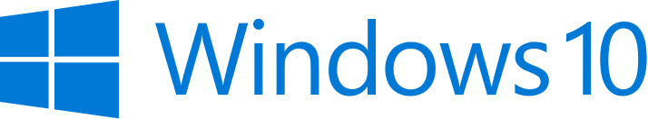

Windows10

Windows 10 (koodinimeltään Threshold) on Microsoftin Windows-perheeseen kuuluva käyttöjärjestelmä. Microsoft sanoi siirtyvänsä Windows 10:n myötä Software as a Service -liiketoimintamalliin, jonka mukaan yhtiö julkaisisi vain päivityksiä eikä uutta versiota muutaman vuoden välein. Tämän vuoksi Windows 10:n sanottiin olevan ”viimeinen Windows”. Windows 10:n seuraaja Windows 11 kuitenkin julkaistiin 5. lokakuuta 2021. Windows 10:n joidenkin versioiden tuki päättyy 14. lokakuuta 2025. Microsoftin pidennetty tuki LTSC-versioon (Long-Term Servicing Channel) on tarjolla myöhempään ajankohtaan.
Aiemmin ilmoitettu lähinnä kannettaville ja tablettitietokoneille tarkoitettu Windows 10X on peruttu. 10X oli tarkoitettu kilpailijaksi Chrome OS:lle. 10X:n ei ollut tarkoitus korvata Windows 10:tä työpöytäkäytössä. Microsoft on kertonut 10X:n suunittelutyön julkaisusta Windows 10:een: tämä sisältää vanhojen kuvakkeiden korvaamista uusilla.
macOS
macOS pohjautuu Nextstep-käyttöjärjestelmään, jonka Apple sai yrityskaupassa 1996 Steve Jobsin NeXT-yritykseltä. Käyttöjärjestelmän ydinosat perustuvat avoimeen lähdekoodiin, etupäässä BSD:hen..
Käyttöjärjestelmän ydin perustuu Mach 3.0 -mikroytimeen, joka yhdistettiin Darwin-ytimeen. XNU-ydin yhdistää BSD-ytimen ja I/O Kit -toiminnot.
Linux
Linux viittaa Linux-ydintä käyttävien Unixin kaltaisten käyttöjärjestelmien perheeseen.[2] Linuxia voi käyttää monissa tietokonelaitteissa, muun muassa matkapuhelimissa, taulutietokoneissa, pelikonsoleissa, palvelimissa ja supertietokoneissa.[3][4][5][6] Linux on maailman käytetyin palvelinkäyttöjärjestelmä ja sitä käyttävät kaikki TOP500-listalla mukana olevat maailman tehokkaimmat supertietokoneet.
Linux soveltuu myös pelikäyttöön: noin 75% tuhannesta suosituimmasta Steam-pelistä toimii jo Linuxilla. Kuitenkaan kaikki pelit eivät vielä Linuxilla toimi.